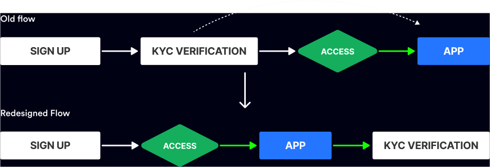

<script>
    let page = "nachonacho";
    let pPath;
    let prev = "";
    let next = "./bolt.html";
</script>
<script src="../js/header.js"></script>
<main id="nachonachoPage" class="works">
    <section
        id="bannerSect"
        style="
            background-image: url(../assets/images/nachonacho/nachonacho_banner.png);
        "
    >
        <div class="bodyCont">
            <div class="bannerFlex">
                <div class="txtContent">
                    <h1>
                        NachoNacho: <br />
                        B2B SaaS Marketplace
                    </h1>
                    <div class="content">
                        Simplify and consolidates subscription management for
                        businesses, providing virtual credit cards and
                        discounted prices on new subscriptions.
                    </div>
                </div>
                
            </div>
        </div>
    </section>
    <div id="otherBody" class="bodyCont">
        <div class="eachSect dFlex flexGrow1">
            <div id="roleDuration">
                <div class="eachCol">
                    <h2>Role</h2>
                    <div class="content">
                        UX Designer <br />
                        UX Researcher
                    </div>
                </div>
                <div class="eachCol">
                    <h2>Duration</h2>
                    <div class="content">8 month +</div>
                </div>
            </div>
            <a
                href="https://nachonacho.com"
                target="_blank"
                class="borderedBtn"
            >
                <span>Visit Website</span>
                <span class="svgIcon-boxDiagonalArrow"></span>
            </a>
        </div>
        <div class="eachSect" id="note">
            <h2>*Note</h2>
            <div class="content">
                <ol>
                    <li>
                        This case study is protected by a non-disclosure
                        agreement (NDA), and therefore, I cannot disclose all
                        the details of the work done.
                    </li>
                    <li>
                        This project is being updated based on user research,
                        stakeholder reviews and other factors. As a result,
                        there may be differences between the information
                        presented in the case study and the live product.
                    </li>
                </ol>
            </div>
        </div>
        <div class="eachSect" id="overview">
            <h2>Overview</h2>
            <div class="content">
                NachoNacho is a San Francisco-based B2B SaaS startup.
                <br /><br />

                NachoNacho is a B2B SaaS application that helps businesses and
                freelancers consolidate and control all their subscriptions in
                one account using virtual credit cards, and buy new
                subscriptions at substantial discounts. NachoNacho is also a new
                user acquisition channel for SaaS vendors through their
                marketplace.
            </div>
        </div>
        <div class="eachSect" id="myRole">
            <h2>My Role</h2>
            <div class="content">
                As part of the team, I contributed to the redesign of the SaaS
                app. This involved conducting extensive research to identify
                bottlenecks hindering growth and creating designs to enhance
                both the functionality and aesthetics of the app, thereby
                driving its overall growth. <br /><br />

                I worked with the lead designer, marketing lead and engineering
                team to improve the user experience of the app.
            </div>
        </div>
        <div class="eachSect" id="uxAuditAnalysis">
            <h2>UX Audit and Competitive Analysis</h2>
            <div class="content">
                I conducted a UX audit of the app, analyzing it in comparison to
                competitors, and identifying our weaknesses and opportunities
                for growth.
            </div>
        </div>
        <div class="eachSect">
            
        </div>
        <div class="eachSect" id="theProblem">
            <h2>What is the Problem?</h2>
            <div class="content">
                <ol>
                    <li>
                        Onboarding users posed a problem due to a lengthy Know
                        Your Customer/Know Your Business (KYC/KYB) verification
                        process that was integrated into the sign-up process.
                        Consequently, this resulted in high churn rates among
                        potential users.
                    </li>
                    <li>
                        The creation process of our virtual credit card,
                        NachoCard, was inefficient and involved navigating
                        through multiple pages.
                    </li>
                </ol>
            </div>
        </div>
        <div class="eachSect">
            <h2>KYC/KYB Verification</h2>
            <div class="content">
                The challenge with the lengthy KYC/KYB process arose from the
                mandatory information requirements required by our bank partner.
                This means that we need to get all mandatory information while
                making the process seamless and less cumbersome.
            </div>
        </div>
        <div class="eachSect">
            <h2>
                How might we optimize the KYC/KYB process during onboarding to
                minimize user churn?
            </h2>
            <div class="content">
                <ul>
                    <li>
                        We streamlined the onboarding process by separating the
                        KYC/KYB verification from the sign-up process, ensuring
                        users are onboarded onto the app before requesting
                        identity verification.
                    </li>
                    <li>
                        We redesigned the process to be more intuitive,
                        providing users with a sense of progress as they fill
                        out the form.
                    </li>
                </ul>
            </div>
        </div>
        <div class="eachSect">
            
        </div>
        <div class="eachSect">
            <div class="content">
                Users were given the opportunity to explore and familiarize
                themselves with the app before being prompted for KYC/KYB
                verification. This reduces friction during the onboarding
                process, making it more user-friendly and accommodating. By
                giving users a chance to experience the app's features and
                functionality, they can develop a better understanding of its
                value proposition, which may increase their motivation to
                complete the verification process.
            </div>
        </div>
        <div class="eachSect">
            
        </div>
        <div class="eachSect">
            <div class="content">
                We achieved an efficient streamlining of our KYC/KYB process,
                condensing the number of screens from 10 to 5.
            </div>
        </div>
        <div class="eachSect">
            <h2>2. NachoCard</h2>
            <div class="content">
                The creation process of our virtual credit card, NachoCard, was
                inefficient and involved navigating through multiple pages.
            </div>
        </div>
        <div class="eachSect">
            
        </div>
        <div class="eachSect">
            <div class="content">
                I redesigned the NachoCard creation process into a single-page
                form, simplifying it and reducing friction. This change
                increased completion time and made it easier for users to spot
                and correct mistakes.
            </div>
        </div>
        <div class="eachSect">
            
        </div>
        <div class="eachSect">
            
        </div>
        <div class="eachSect">
            <div class="content txtCenter">
                After our redesign we saw a drastic increase in our overall
                product engagement and usage, which were our key KPIs.
            </div>
        </div>
        <script src="../js/worksFooter.js"></script>
    </div>
</main>
<script src="../js/footer.js"></script>
